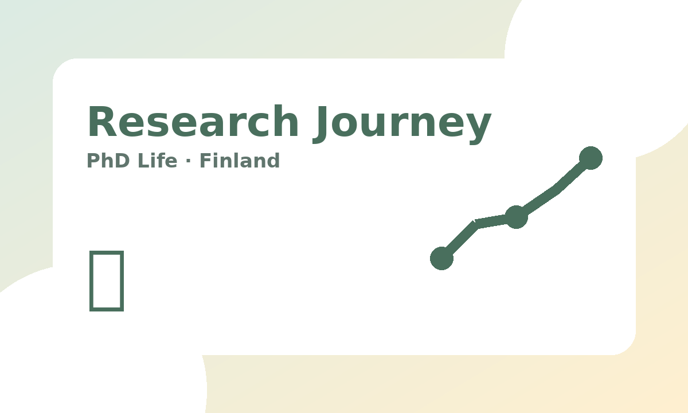

Started Doctoral Studies at the University of Helsinki, Finland
A short reflection on beginning a doctoral research journey, adapting to a new academic environment, and building research direction step by step.
August 2026
Read More ↗